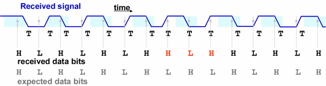

Overview of the protocol engine per pin
The protocol engine per pin, which is available on Smart Scale systems, serves to cope with non-deterministic behavior of devices on which all data transitions at the output pins are expected to occur at multiples of a unit interval (abbreviated as "UI"). This UI is defined by period_length/x_mode. A protocol engine test can only be executed in x4-mode or x6-mode, so that one tester cycle will comprise either 4 or 6 UI's.
The engine consists of two main parts, a transition tracking block (often simply called "transition tracker" or "tracker") and a pattern tracking block. The transition tracking block tries to detect all transitions within the received data, even if they do not occur at a multiple of one UI, and passes its results as a bit sequence to the pattern tracking block. The pattern tracking block compares this bit sequence to the expected data.
The kinds of non-deterministic behavior that can be handled by the protocol engine are initial latency, drift, and insertion of idle tokens.
Startup latency
This means that the time span until the effects of the first stimulus to the input pins become visible at the output pins can vary between different devices of the same kind and even between different tests of the same device.
This problem is solved by the pattern tracking mechanism of the protocol engine. For details see Startup latency and initial synchronization.
The pattern tracking mechanism can also be used to ensure a consistent positioning of the transition tracking window at test start. For details see Positioning the first observation window and jump by 2.
Drift
Drift is a long-term deviation of the transitions from their expected position. In many situations such a deviation is to be tolerated within a certain range. A typical case is source synchronous testing where a common drift of the device clock and the data signal is acceptable as long as the relative timing of both is still preserved (see also Concept of source synchronous testing). But then there must be a way to control whether the expected number of transitions occur within the expected range although the exact position of the transition is not known and may change from one test to the next.
The following figure shows an example where a transition is not detected by a normal digital test because of drift:

The 3rd bit is only 3/4 UI long. This has the effect that the following compare actions occur immediately before a transition. In the example, expected and received value still match until the 7th transition, from H to L, which is missed because the 8th bit is also only 3/4 UI long.
This problem is solved by the transition tracking mechanism of the protocol engine. It ensures that, under certain conditions, all data transitions that actually occur at an output pin are detected. For details see Drift and transition tracking.
Insertion of idle tokens
In some protocols, data is transmitted in packets or tokens, that is, as bit sequences of fixed length. These tokens come in two kinds, payload tokens, which contain the user data, and idle tokens, which are inserted between the payload tokens to bridge wait times, and which must be skipped for the evaluation. It is not predictable when and how many of these idle tokens will be inserted between the payload tokens.
This problem is solved by the pattern tracking mechanism of the protocol engine. For details see Skipping idle tokens.
Functional changes
- Introduced in SmarTest 7.0.1